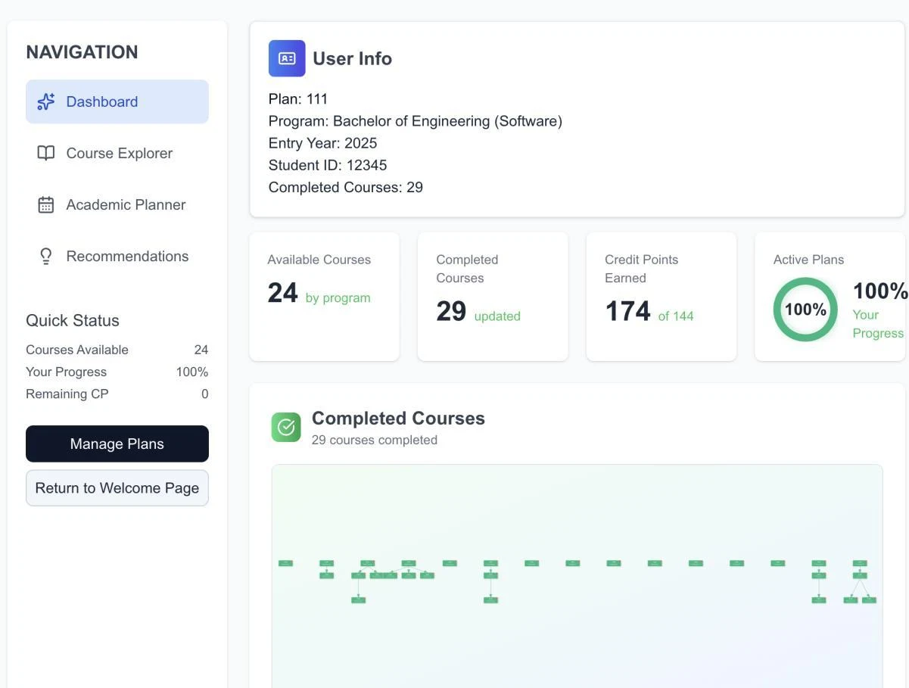
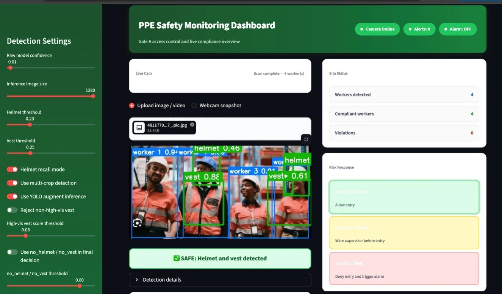
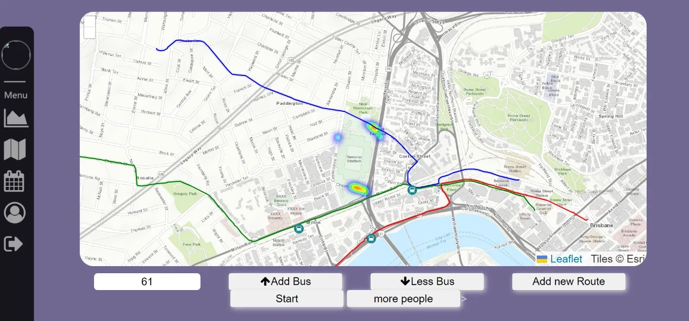

01 / WEB + LANGUAGE MODEL
UTS 课程规划与推荐
课程依赖可视化、拖拽排课与兴趣推荐，把课程关系变成可操作的学习计划。
TypeScriptNext.jsOllama
在线可交互；推荐为关键词演示。原项目支持本地大模型。
打开交互演示 ↗四个项目，展示 Web 开发、AI 应用集成、数据分析与交通仿真实践。可以体验课程规划和公交调度、观看检测效果，或浏览带注解的数据图表。

课程依赖可视化、拖拽排课与兴趣推荐，把课程关系变成可操作的学习计划。
在线可交互；推荐为关键词演示。原项目支持本地大模型。
打开交互演示 ↗
比较目标检测模型，将检测结果接入界面，并分析小目标漏检与装备关联问题。
实际检测视频、模型指标和失败案例；完整推理需本地运行。
观看检测效果 ↗
通过冠军分布、比赛时长与多指标比较，组织历史决赛数据并解释分析边界。
原项目图表与注解；可切换不同分析视角。
探索数据图表 ↗
将赛事散场人流、公交线路和调度操作连接起来，展示空间数据处理与前后端状态同步。
浏览器规则仿真可交互；原团队前后端与复现说明见源码。
体验公交调度 ↗计算机科学与 IT 数据分析背景。项目实践涉及前端交互、模型接口、检测评估与数据可视化。
课程项目：课程样本、依赖可视化、前端与联调。PPE：Faster R-CNN / SSD 训练测试、界面与调试。澳网：个人数据分析与可视化。EZ Bus：UQ 团队项目，参与交通可视化系统开发；完整系统归属于团队。
先体验或观看结果，再通过项目页了解技术流程、验证方式和局限；每个项目都有独立 GitHub 仓库。
此作品集使用 GitHub Pages。课程原有模型调用与 PPE Python 推理需要运行环境；EZ Bus 在线运行浏览器版规则仿真，原 Python 服务需本地运行。线上页面已明确标出可直接体验与仅展示结果的部分。